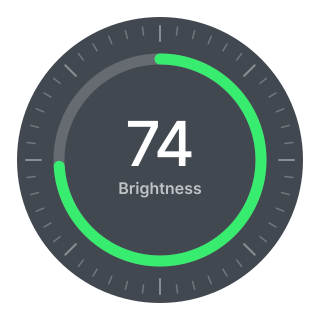

A dial for your desktop.
Keep volume, brightness, timers, and alarms close without keeping another window open.
Download for macOSFor Apple silicon Macs running macOS 14 or later.

VolumeAdjust your output and mute at zero.
BrightnessControl built-in and supported external displays.
TimerSet, pause, and reset a countdown.
AlarmSet a one-shot reminder on the dial.
Install in two steps
Open the download, then drag mac-dial into Applications. The app checks for new versions and offers to install them when they are published.
This preview build is not notarized. macOS may ask you to approve opening it in Privacy & Security.